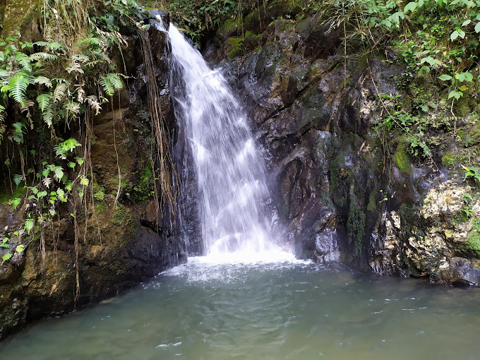
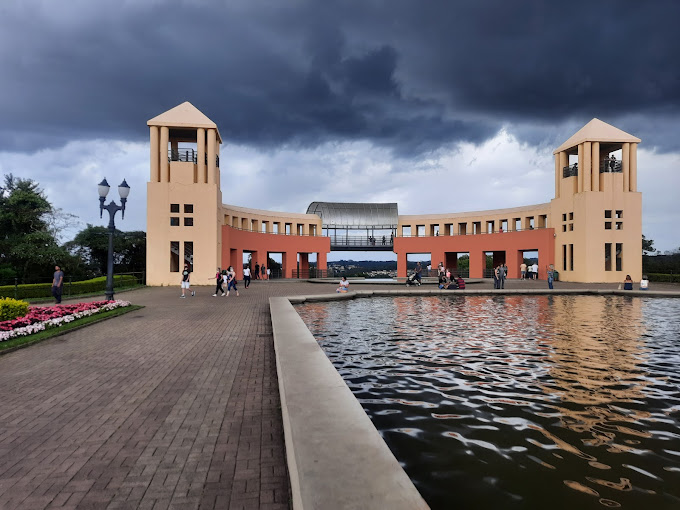
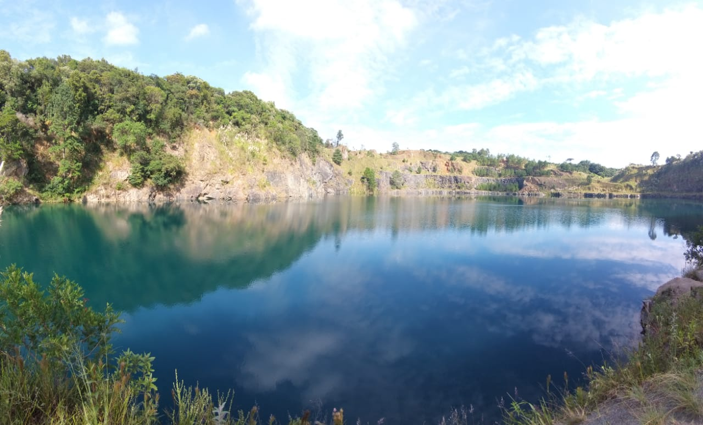
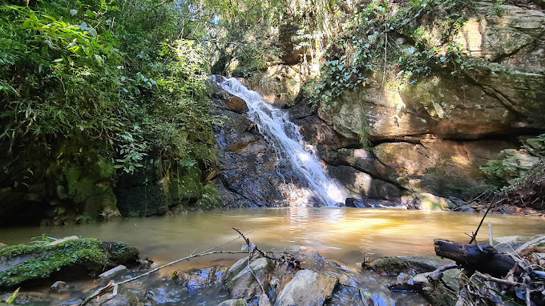
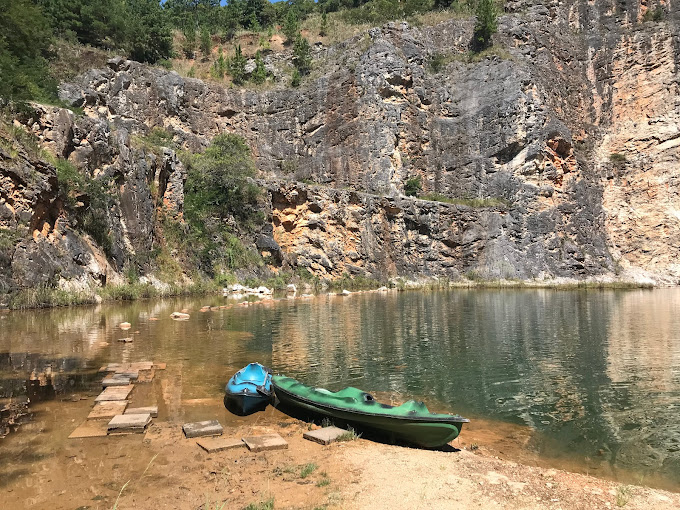
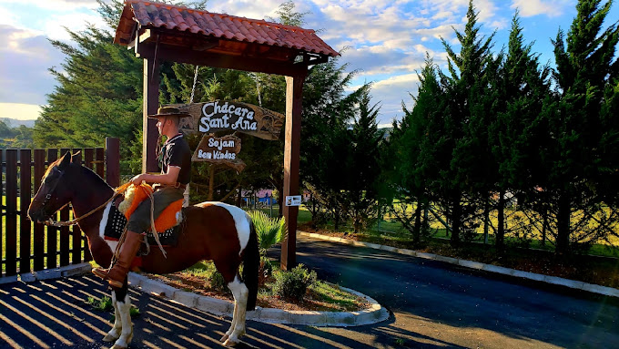

Bem-vindo a cidade de Campo Magro!
Conheça os principais pontos turísticos da cidade e onde encontrá-los.
Aqui estão alguns dos pontos turísticos e naturais que você pode visitar em Campo Magro:
|
Cachoeiras Gêmeas  |
Parque Tanguá  |
||
|
Pedreira Orleans  |
Cachoeira Pedra Lisa 
| Lagoa Azul 
|
Chácara Sant'Ana  |
Para mais informações, entre em contato conosco: